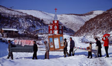

|
CRIME AND PUNISHMENT

Zhao Liang | China/F 2007 | 122 Min.
Format: DVD
Originalsprache: Mandarin
Drehbuch: Zhao Liang
Kamera: Zhao Liang
Schnitt: Zhao Liang
Ton: Zhao Liang
Produktion: Three Shadows Photography
Art Center, INA
Montgolfière d'Or, Visions du Réel, Nantes 2007
Mit freundlicher Genehmigung der L.A. Galerie Lothar Albrecht, Frankfurt a.M./Peking
Zhao Liang hat den Titel seines Films Dostojewskis Roman entnommen. Er zeigt unkommentiert echtes Verbrechen und echte Strafe an der chinesischen Grenze zu Nordkorea. Was zunächst wie ein harmloses "Räuber und Gendarm"-Spiel aussieht, dokumentiert in Wirklichkeit die ausweglose Situation der Menschen in der Provinz und kritisiert die trostlosen Lebensbedingungen.
"Zhao Liang hat Ausdauer – eine Ausdauer, die ihn mit vielen Figuren in seinen dokumentarischen Filmen verbindet. Es sind die individuellen Geschichten der Unterprivilegierten, die ihn interessieren und aus denen er Anhaltspunkte für die gesellschaftliche Verfasstheit Chinas herauskristallisiert." (Berlin Biennale 2008)
Zhao Liang, geb. 1971, graduierte an der Luxung Akademie der schönen Künste und studierte an der Pekinger Filmhochschule. Er lebt und arbeitet in Peking.
Filme (Auswahl): Crime and Punishment 2007 | Heavy Sleepers 2006 | City Scene 2005 | Return to the Border 2004 | Paper Air Plane 1997-2001 | Deformed Men Acrobatic 1998
Ausstellungen: L.A. Galerie Lothar Albrecht, Frankfurt a.M. 2008 |
Three Shadows Photography Art Center, Peking 2008 | D'Amelio Terras, New York 2004
Gruppenausstellungen (Auswahl): Carolina Nitsch Project Room, New York 2008 |
Three Shadows Photography Art Center, Peking 2007 |
Haus der Kulturen der Welt 2006 |
The Victoria and Albert Museum, London 2006 |
Biennale Venedig 2005 |
Museum of Contemporary Art Chicago 2005 |
ICP International Center of Photography, New York 2004 | The Japan Foundation Forum 2004
zurück
|